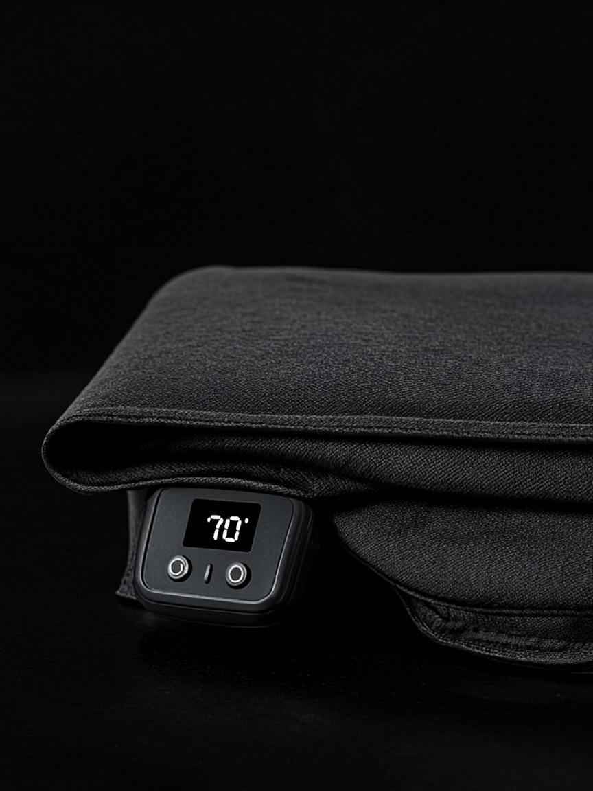

7-10jTop VentePlus que 4 en stock
7-10jTop VentePlus que 4 en stockSynchroRing X1
Sommeil, fréquence cardiaque, SpO2, température — votre nuit décryptée chaque matin, sans rien faire.

Une tension qui grimpe en silence depuis des mois. Des nuits qui ne reposent plus depuis si longtemps que c'est devenu "normal". Un corps qui encaisse, encaisse — jusqu'au jour où il ne peut plus. SynchroVie réunit les objets connectés qui captent ces signaux avant, pas après, pour agir au bon moment plutôt que dans l'urgence.
Tension, oxygénation, glycémie, rythme cardiaque — les signaux que votre corps envoie en silence, bien avant que vous ne sentiez quoi que ce soit.
6 produitsLe sommeil qui ne répare plus, les nuits qui s'enchaînent sans jamais vraiment recharger. Comprendre ce qui se passe pendant que vous dormez — et enfin agir dessus.
5 produitsLe stress qu'on porte sans s'en rendre compte, jusqu'à ce qu'il se loge dans les épaules, la mâchoire, le sommeil. Des outils pour le voir venir — et le faire retomber.
2 produitsDouleurs qui reviennent, posture qui s'affaisse au fil des heures de bureau, récupération qui traîne après l'effort. De quoi reprendre la main sur votre corps, concrètement.
7 produitsVotre corps envoie des signaux bien avant que vous ne sentiez quoi que ce soit. Tension qui grimpe, oxygénation qui baisse, rythme cardiaque qui s'emballe la nuit — ce sont des données, pas des fatalités. Six instruments pour les capter, les lire, et agir au bon moment.
7-10jTop VentePlus que 4 en stockSommeil, fréquence cardiaque, SpO2, température — votre nuit décryptée chaque matin, sans rien faire.
 7-10jIl ne reste que 4 en stock
7-10jIl ne reste que 4 en stockUne tension qui grimpe en silence pendant des années. Celui-ci, vous le saurez avant qu'elle ne grimpe trop.
 7-10j
7-10jLe chiffre sur la balance ne dit presque rien. Celle-ci mesure ce qui change vraiment : muscle, graisse, eau, os.
 7-10j10 en stock
7-10j10 en stockECG et oxygénation en 30 secondes, depuis votre canapé — au lieu d'attendre trois semaines pour un rendez-vous.
 7-10j
7-10jUne fièvre qui monte chez un enfant à 23h. Une lecture en une seconde, sans le réveiller.
 7-10jTop VentePlus que 6 en stock
7-10jTop VentePlus que 6 en stockLes pensées qui tournent en boucle au moment d'éteindre la lumière. Le masque qui aide le cerveau à les lâcher.
 7-10j
7-10jPas de bracelet, pas de bague à porter — glissé sous le matelas, il capte chaque cycle de sommeil sans que vous y pensiez.
 7-10j
7-10jSe réveiller en sursaut, dans le noir, l'hiver. Le réveil qui simule l'aube pour que le corps se réveille avant l'alarme.
 7-10j
7-10jCette tension qui se loge dans la nuque en fin de journée, à force d'écrans. Une chaleur ciblée qui la fait redescendre.

7-10jLe sauna, mais chez vous — une chaleur qui pénètre en profondeur pour détendre les muscles et faire transpirer.
 7-10j
7-10jLe stress qu'on ne sent plus parce qu'on s'y est habitué. Cette bague le détecte avant que le corps ne craque.
 7-10j
7-10jPas le temps pour la salle aujourd'hui ? 20 minutes d'électrostimulation ciblée, et les muscles travaillent quand même.
 7-10j
7-10jLe dos qui s'arrondit sans qu'on le remarque, jusqu'au mal de dos du soir. Une vibration discrète vous rappelle de vous redresser.
 7-10j20 en stock
7-10j20 en stockLes mollets durs après une séance, les épaules nouées après une journée assise. De quoi les défaire en quelques minutes, à la maison.
 7-10j
7-10jCe genou qui craque dans les escaliers et qui freine à chaque sortie. Chaleur et compression ciblées pour le soulager au quotidien.
 7-10j
7-10jLa force de la poigne en dit long sur la récupération globale. De quoi la mesurer, suivre sa progression, et savoir où on en est vraiment.
 7-10jNouveau
7-10jNouveauLa lumière rouge et proche infrarouge, utilisée en clinique pour la peau et la récupération musculaire — désormais accessible chez vous.
Expédié depuis nos entrepôts européens, avec un numéro de suivi à chaque étape — pas de mauvaise surprise sur les délais.
Vos données bancaires ne transitent jamais par nos serveurs. Chiffrement SSL de bout en bout sur chaque commande.
Le produit ne convient pas ? Renvoyez-le, remboursé, sans avoir à justifier quoi que ce soit.
Un défaut de fabrication ? Réparation ou remplacement pris en charge, sans frais cachés ni paperasse interminable.
Une question avant ou après l'achat ? Une vraie personne vous répond — pas un robot, pas un script.
Votre tranquillité d'esprit, notre priorité
"Après deux mois avec la SynchroRing X1, l'appli m'a révélé que mon sommeil profond ne dépassait pas 35 minutes par nuit. J'ai ajusté mes habitudes et je suis passé à 1h15. Les données VFC sont un guide précieux pour la récupération sportive."
"Mon médecin me demandait un relevé de tension matin et soir pendant deux semaines. Avec cet appareil, les données étaient exportées directement pour la consultation. Précis, simple, et la mallette est pratique pour les déplacements."
"Je l'utilisé après chaque sortie running sur les mollets et les ischios. Discret et silencieux, la batterie tient largement la semaine. Le format compact rentre facilement dans le sac de sport. Très bon rapport qualité-prix."
"Les 5 signaux que votre corps envoie avant un burn-out" — découvrez ce que 94% des gens ignorent.